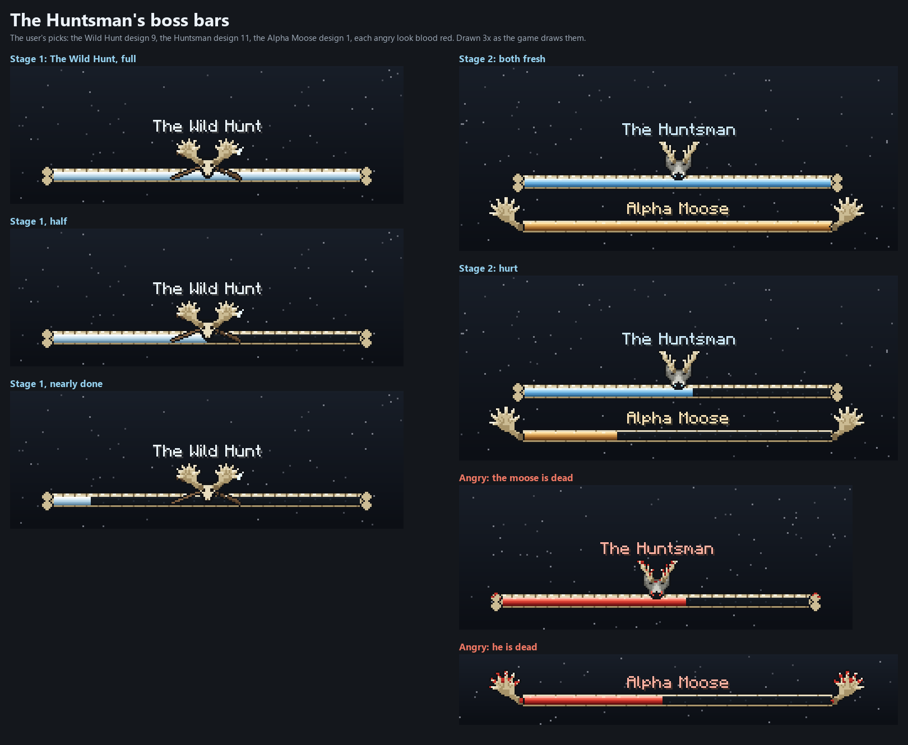

Stage 1 shows one bar, The Wild Hunt (him riding the Alpha Moose: design 9, Skull Trophy). Stage 2 shows two, The Huntsman (design 11, Wolf & Antlers) and Alpha Moose (design 1, Antler Frame); when one of them dies the other's bar turns blood red. Drawn 3x, exactly as the game draws them. In the game: /dross showcase bossbars huntsman (and ... angry).
